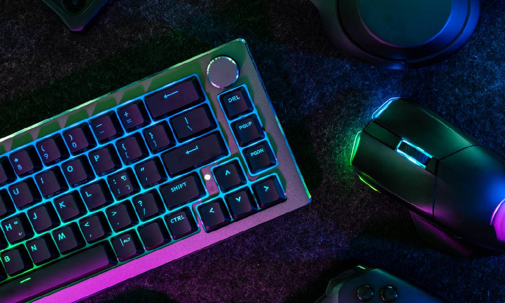

Keyboard mechanical adalah keyboard dengan komponen mekanik berupa switch yang terhubung dengan keycaps. Respons keyboard ini lebih cepat dari keyboard biasa. Selain itu, keyboard mechanical juga memiliki sensasi klik yang berbeda. Dengan karakteristiknya tersebut, keyboard mechanical sering digunakan untuk gaming atau mengetik cepat. Karena digunakan untuk beragam kebutuhan, ada beberapa pilihan layout keyboard mechanical yakni full keys dan ten key less (TKL). Full keys adalah keyboard yang lengkap dengan numeric pad. Jenis ini cocok untuk penggunaan sehari-hari, terutama untuk pengolahan data angka. Sementara itu, TKL adalah keyboard yang tidak mempunyai numeric pad. Ada beberapa jenis keyboard TKL, seperti keyboard 40%, 60%, 65%, dan 75%. Makin kecil nilainya, maka makin sedikit jumlah tombolnya. Jenis keyboard TKL bagus digunakan untuk bermain game FPS (first-person shooter). Ukurannya yang compact membuat Anda bisa lebih leluasa untuk menggerakkan mouse.
Keyboard Mechanical

Duration
08 August 2023 - 08 nov 2023
3 months
Technologies
| ReactJS | JavaScript |
| NodeJS | HTML |